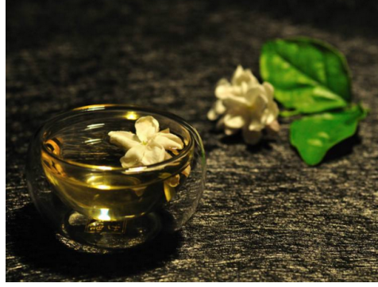

春夏之交喝什么茶养生？亦舒堂推荐3款茶
2017-04-19 12:02:55 来源: 综合 作者:
春夏之交容易出现倦困，这时喝一杯清香的春茶甚好。茶的口感、清香都可以全面地刺激感官，使人提起神来。那么春夏之交养生喝什么茶好呢?亦舒堂养生专家，推荐你3款茶!
1、决明子茶
决明子具有清肝明目，润肠通便，降脂瘦身的功能。所含大黄素、大黄酚对人体有平喘、利胆、保肝、降压功效，并有一定抗菌、消炎作用。将决明子用微火炒制，勤加翻动，炒至微黄色，有香气逸出即可，不可炒糊，沏茶时，取20克放至茶杯中，用开水冲泡，数分钟左右茶色即呈淡黄并逐渐加深，有香味溢出。

2、茉莉花茶
尽管春天开始变暖，但是温差较大，胃肠一旦不适应容易出现腹痛、腹泻、恶心等症状。茉莉花能促进胃的消化吸收，缓解胃痛，对腹泻腹痛有很好的疗效。茉莉花干品5克(鲜品15克)，冰糖或蜂蜜适量，开水冲泡4分钟即可。但是，体内有热毒者禁止饮用。
3、桂花茶
桂花茶是醒脾开胃、疏肝理气的上等饮品，还常用于缓解咽干口燥、口臭牙痛。由于桂花性味辛温，因此在春季最好用性质偏凉的绿茶或乌龙茶与桂花相配，取干桂花3克，绿茶或乌龙茶5克，沸水冲泡6分钟，即可饮用。
一款适合的养生茶，能让你在春夏之交过得更加惬意。喝茶虽好，但是不是每个人都是适合喝茶哦，亦舒堂专家提醒你，孕妇、儿童以及体质虚寒的人少喝茶!